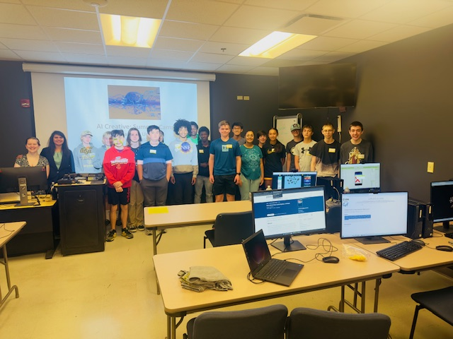
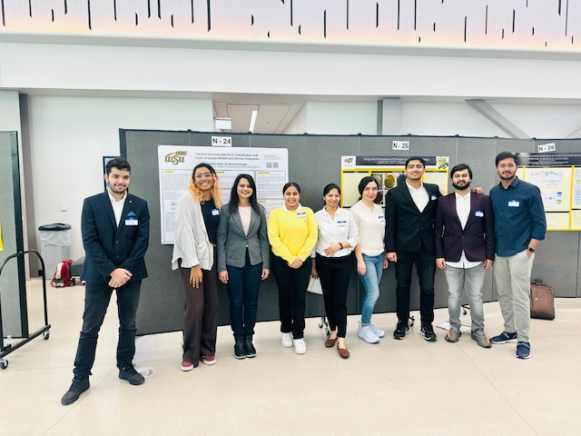

Lab Activities
-
 Dr. Shruti Kshirsagar was a panelist at the AI and Elections Panel at Wichita State University.
Dr. Shruti Kshirsagar was a panelist at the AI and Elections Panel at Wichita State University.
-

Dr. Shruti Kshirsagar hosted an engaging workshop introducing AI fundamentals and ethics to high school students, including hands-on activities at Wichita State University
-

SoundMind research group PhD and master's thesis students presented 8 innovative project posters during WSU's Annual Engineering Research Symposium 2024 at the Digital Research and Transformation Hub. Great work! SoundMind research group members Elmira Salari, and Mark Angelo Ronald won the 2nd and 3rd place at WSU's Research Day.